RECENT WORK
최근 작업
천안·아산에서 다녀온 현장을 작업 일지로 정리해 두었어요.
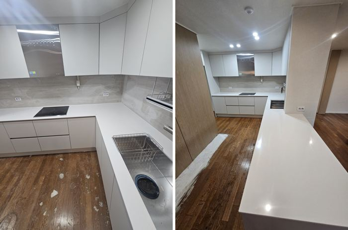
9월 27일 현장
욕실 전경까지 열어 본 집
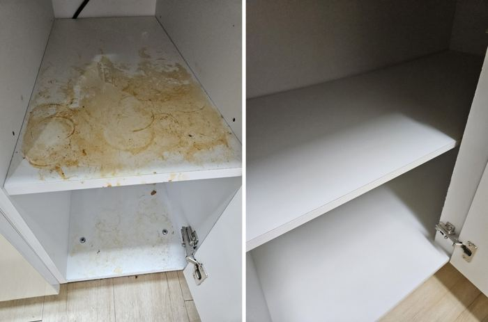
9월 18일 현장
살다 나간 집
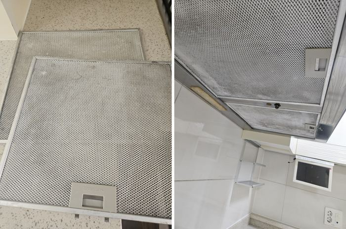
9월 14일 현장
걸레받이 곰팡이부터 다시 잡은 집
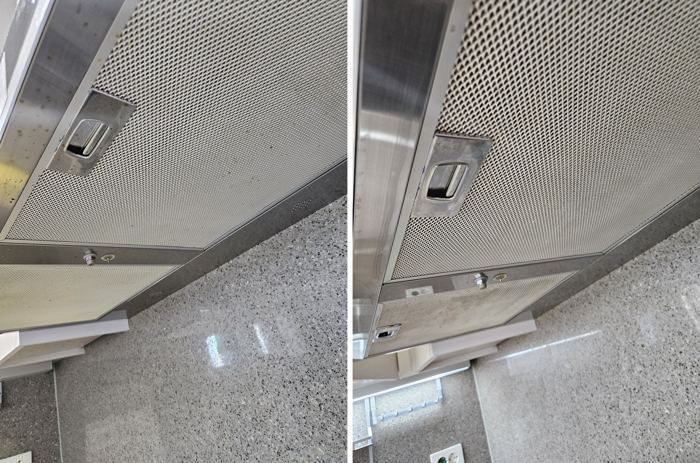
7월 31일 현장
방 샷시 레일이 유난히 심했던 집
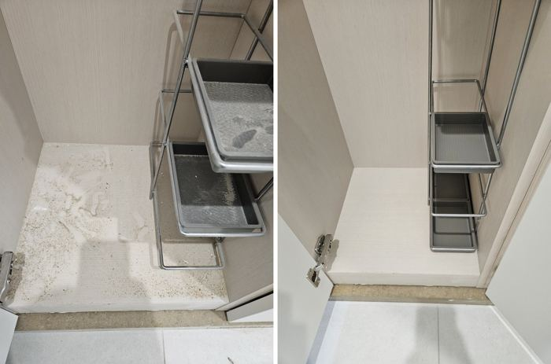
7월 30일 현장
주방 하부장 내부에서 시간을 쓴 집
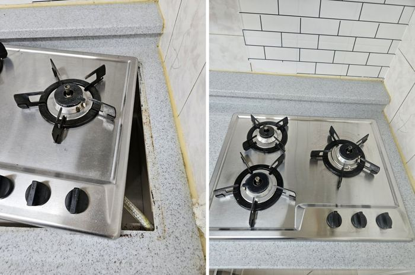
7월 27일 현장
방 샷시 레일을 끝까지 비운 집
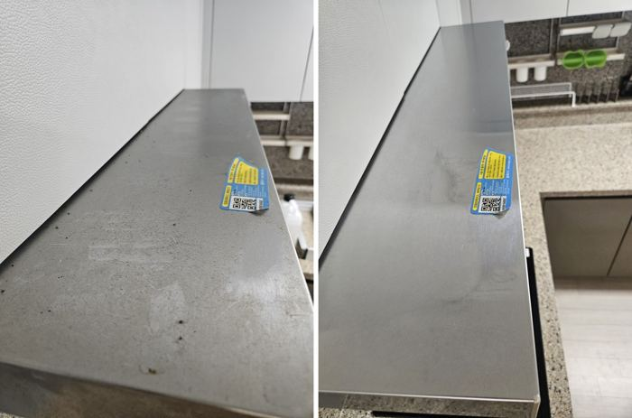
7월 24일 현장
거실 샷시 레일까지 열어 본 집
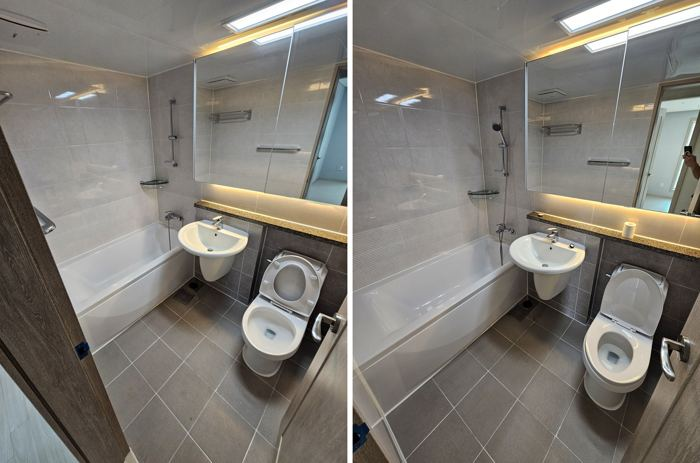
7월 23일 현장
거실 샷시 레일에 손이 많이 간 집
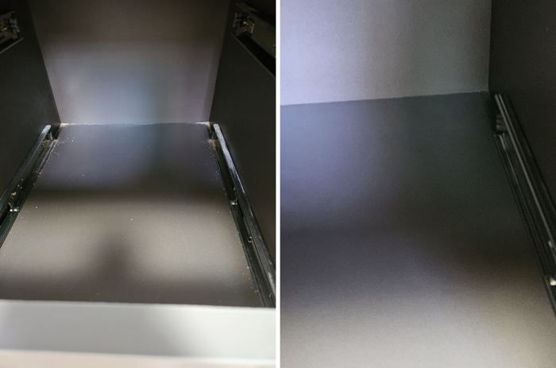
7월 20일 현장
방 벽지 하단부터 다시 잡은 집
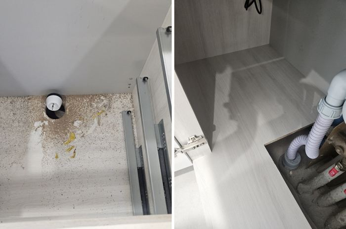
7월 20일 현장
베란다 샷시 레일이 유난히 심했던 집

7월 10일 현장
욕실 바닥 배수구 트랩에서 시간을 쓴 집
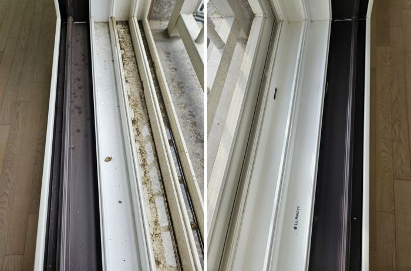
부위별 모아보기
방·수납 편
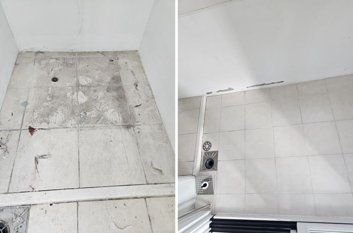
부위별 모아보기
창틀·베란다 편
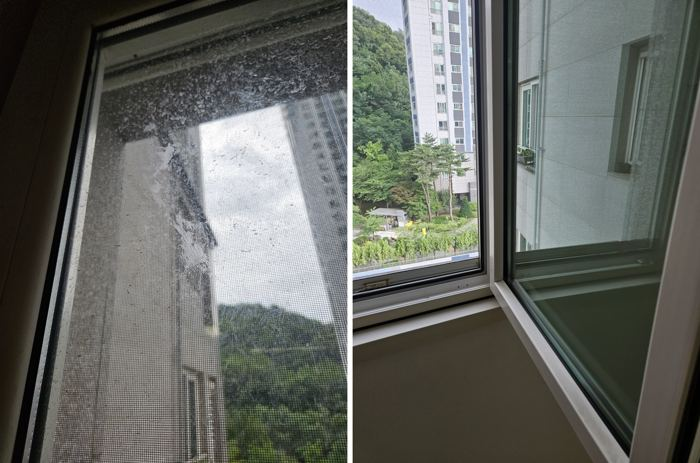
부위별 모아보기